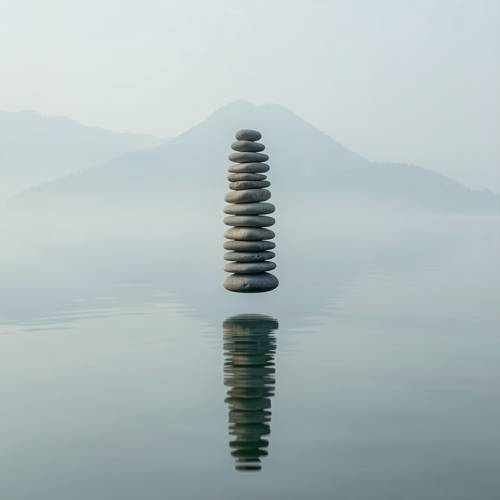
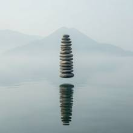
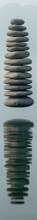

Entity Layout — A tower of smooth cobblestones suspended above the calm water, and bey
A tower of smooth cobblestones suspended above the calm water, and beyond is a vague mountain, the entire scene assumes a Zen feel.


Judge — Direct
- FAILEntity Layout - Three-Dimensional Space — In the image, a tower of stacked, smooth cobblestones is positioned in the center. The base of this tower is situated within a body of calm water, with the lowest stones partially submerged and creating ripples. In the background, beyond the water and the tower, a large, vague mountain is visible through a hazy atmosphere. The prompt requires the tower to be 'suspended above the calm water', but the image depicts the tower resting in the water, which contradicts this specific spatial arrangement.
Judge — Continuum
- PASSEntity Layout - Three-Dimensional Space — The image displays a clear three-dimensional layout as described in the prompt. In the middle ground, there is a tower of stacked, smooth cobblestones. This tower is positioned so that it appears suspended directly above the surface of calm water, which occupies the lower half of the frame. In the background, behind both the tower and the water, the vague outline of a mountain is visible through a thick layer of fog or mist.
What the agent did
Thinking
Let me analyze this prompt: - A tower of smooth cobblestones suspended above calm water - Distant mountains faintly visible - Zen atmosphere This is a minimalist, Zen-like scene. A tower of stacked cobblestones (like a stone stack / cairn) floating or suspended above still water, with hazy mountains in the background. Let me generate this with flux2-klein. The composition should be vertical or landscape, but I can't change the size. Let me create a beautiful prompt. Key visual details: - Tower / cairn of smooth rounded stones stacked vertically - Floating / suspended above calm still water (with reflection) - Distant hazy, misty mountains in the background - Zen, minimal, serene atmosphere - Probably soft muted colors, mist, soft light Let me write the prompt: "Minimalist Zen landscape: a tall cairn tower of smooth rounded cobblestones stacked vertically, floating weightlessly suspended above perfectly calm still water with a mirror-like surface reflecting the stones, a faint hazy mountain silhouette in the far distance through morning mist, soft muted gray-blue palette, gentle diffused light, serene meditative atmosphere, negative space, minimalist composition" Let me generate this, then inspect it, then edit as needed.
Step 1 — `generate_image`
{
"model": "flux2-klein",
"prompt": "Minimalist Zen landscape photograph: a tall tower of smooth rounded cobblestones stacked vertically, balanced one on top of another, floating weightlessly suspended just above the surface of perfectly calm, mirror-still water. The tower's reflection shimmers in the still water below. In the far distance, a vague hazy mountain silhouette dissolves into soft morning mist. Soft diffused light, muted gray-blue and pale sage palette, generous negative space, serene meditative atmosphere, ultra-clean minimalist composition, tranquil."
}Result img_0

Thinking
The image turned out really well. Let me evaluate it against the prompt: - Tower of smooth cobblestones: ✓ Yes, a stack of smoothly rounded stones - Suspended above calm water: ✓ The bottommost stone appears to be hovering just above the water's surface, with a reflection below - Faint mountain in the distance: ✓ A hazy mountain silhouette in the background - Zen atmosphere: ✓ A misty, muted, serene palette This is a strong result. Let me zoom in to check the details — whether the stones look smooth and well-stacked, and whether the suspension above the water's surface reads properly.
Step 2 — `inspect_region`
{
"image": "img_0",
"roi": "the stack of stones",
"padding": 0.1
}Result img_1

Thinking
The stack of stones is clean — the stones are smooth and rounded, well balanced, and the base stone is hovering slightly above the water's surface, with a reflection beneath it. This reads perfectly as "suspended above calm water." Everything matches the prompt: - Tower of smooth cobblestones ✓ - Suspended above calm water ✓ (there's a visible gap between the base stone and the water's surface, and the reflection is below it) - Distant faint mountains ✓ - Zen-like atmosphere ✓ This is a really good result. I don't think any editing is needed. Let me mark this as the best and stop.
Model
The result is spot-on: the stones are smoothly rounded and well-balanced, the bottom stone visibly floats just above the water's surface with a shimmering reflection below it, and the misty mountain silhouette keeps the scene vague and distant. Everything the prompt asks for is present and correct — a clean Zen composition.
Step 3 — `mark_best`
{
"image": "img_0",
"reason": "All prompt elements present and correct: a tower of smooth cobblestones suspended just above mirror-calm water with a reflection, a vague hazy mountain beyond, and a serene Zen atmosphere. No edits needed."
}Thinking
The image has been marked. The task is complete.
Model
Done. The final image shows a tower of smooth cobblestones suspended above perfectly calm water, its reflection rippling below, with a vague mountain fading into mist in the distance — a quiet, Zen composition in muted gray-blue tones. Marked as the best result.